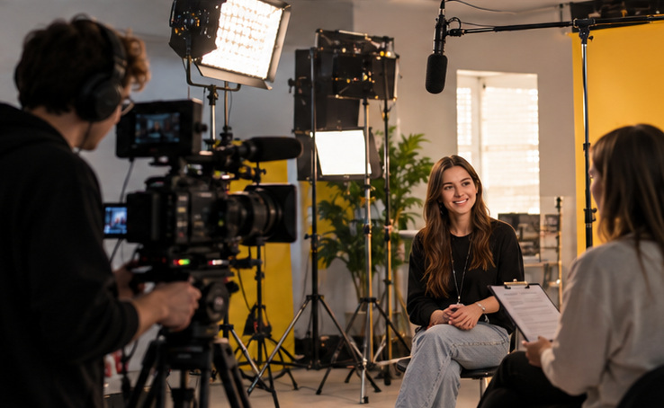
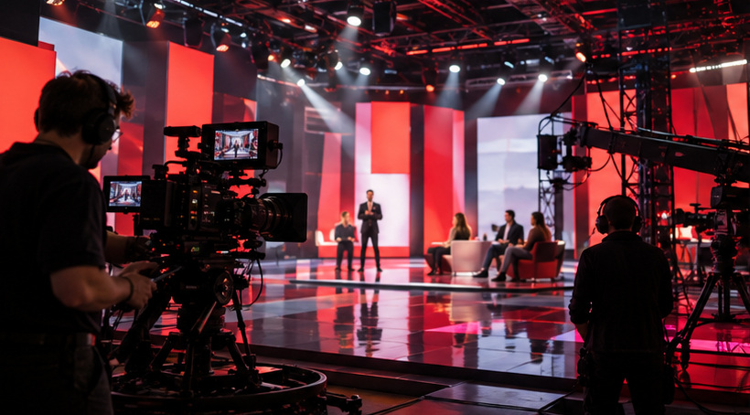
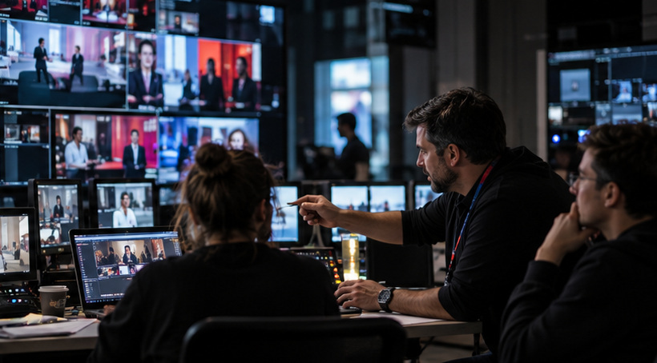

Загальні контакти компанії
Із загальних питань
reception@1plus1.tv
Контакти пресслужби
prgroup@1plus1.tv
1+1 Media School
school@1plus1.tv
Зв’яжіться з командою 1+1 Media щодо співпраці, медіапроєктів або загальних питань.
Із загальних питань
reception@1plus1.tv
Контакти пресслужби
prgroup@1plus1.tv
1+1 Media School
school@1plus1.tv
1+1 Україна
media@1plus1.tv
ТЕТ
info@tet.tv
2+2
info@2plus2.ua
ПЛЮСПЛЮС
info.plusplus@1plus1.tv
Бігуді
pr@bigudi.tv
Молодість дистриб'юшн
i.filipova@molodist.tv
Дистрибуція телеканалів
distribution.group@1plus1.tv
Пряма реклама на телебаченні
o.zhdanov@siriusmedia.com.ua
Спонсорство
sponsor@pluses.com.ua
Кросплатформенні продажі та реклама в Digital
g.polishchuk@1plus1.digital
Зовнішня реклама
dovira@pluses.com.ua
Продакшн команди
production@1plus1.tv
Студії дубляжу
a.makukh@1plus1.tv
ТСН
feedback@1plus1.tv
ТСН. Допомога
dopomoga@1plus1.tv
Ініціатива Чисте небо
legalcontentua@gmail.com
SUDUM
workwith@sudum.net



Пошук за назвами та вмістом сторінок цієї демонстраційної версії.